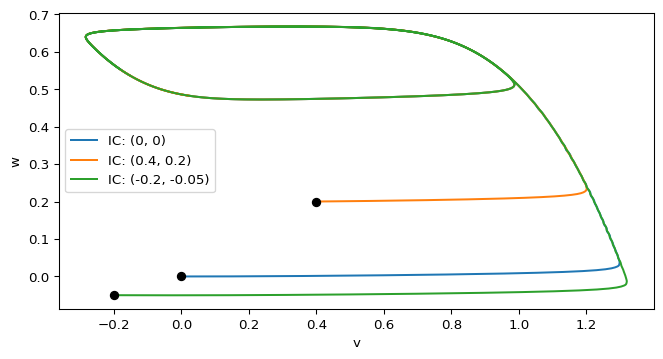
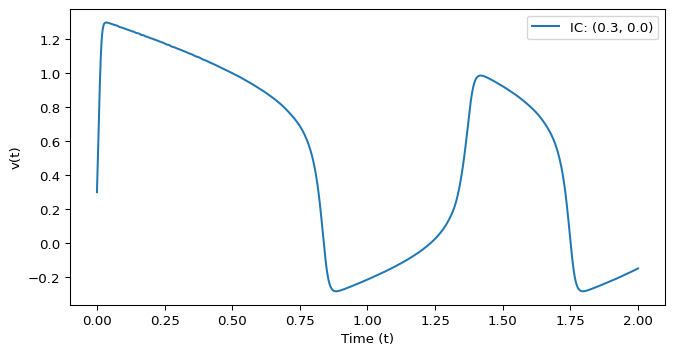

scipy.integrate.solve_ivp() and matplotlib.
Excitability, Spikes, and Fast-Slow Dynamics
The FitzHugh–Nagumo model is a simplified neuron model that captures key features of excitability and spiking behavior (FitzHugh 1961; Nagumo, Arimoto, and Yoshizawa 1962). It consists of two coupled ODEs:
\[\begin{aligned} \epsilon \dot v &= f(v) - w + I_{\text{app}} \\ \dot w &= v - \gamma w \end{aligned} \tag{1}\]
Where \(v\) is the fast variable representing the membrane potential, \(w\) is a recovery variable, \(I_{\text{app}}\) is an applied current, and \(\epsilon \ll 1\) controls the timescale separation between the fast variable \(v\) and the slow variable \(w\). \(f(v)\) is a cubic nonlinearity, often taken as
\[ f(v) = v (1 - v)(v - \alpha),\quad \text{for } 0 < \alpha < 1 \tag{2}\]
Here \(v\) is the fast variable and \(w\) is the slow recovery variable. That time-scale split is what makes the model a useful example of excitability and spike-like excursions.
The nullclines are
\[ \dot v = 0 \quad \Longrightarrow \quad w = f(v) + I_{\text{app}}, \qquad \dot w = 0 \quad \Longrightarrow \quad w = \frac{v}{\gamma}. \]
The cubic-shaped \(v\)-nullcline and the straight-line \(w\)-nullcline organize the phase-plane flow. Depending on the parameter values, trajectories may relax to rest, produce a large excursion, or settle into sustained oscillations.

scipy.integrate.solve_ivp() and matplotlib.
def fitzhugh_nagumo(t, vw, i_app=0.5, gamma=0.5, alpha=0.1, epsilon=0.01):
v, w = vw
fv = v * (1 - v) * (v - alpha)
dvdt = (fv - w + i_app) / epsilon
dwdt = v - gamma * w
return np.array([dvdt, dwdt])Follow the CDIMA pipeline again: solve trajectories, inspect the phase plane, compute nullclines, and then animate the motion.
In the excitable regime, trajectories typically stay near the resting equilibrium, but sufficiently large perturbations can trigger a large excursion (a “spike”) before returning to rest.
Below we plot the fast variable \(v(t)\) for a fixed parameter set and initial condition.

Try changing the initial condition and parameters to see how the time series changes. Then connect those changes back to the nullclines and the phase-plane trajectories.
Once the fast-slow geometry is clear, use the animation pattern to turn the static phase plane into an interactive exploration tool.